記事041 TCBピコレーザー女性
フリップアンケ勝ち理由言語化
シミ・肝斑に悩む女性向け記事を、制作判断・読者心理・CV逆算・横展開ルールに分解した共有用メモ。
結論
勝ち筋は、既に取れていたピコ女性の訴求・素材・デザインを残し、フリップアンケで「悩みの自覚 → 理想像 → 不安払拭 → 0円オファー」へ感情を上下させ、即決層と警戒層を段階的に拾いにいったこと。
シミ・肝斑に悩む、または自分の悩みがシミか肝斑かわからない層。
ピコ女性ステップアンケで取れていた素材・コピー・デザインを踏襲。
通常/ステップアンケではなく、カード反転式のフリップアンケへ変更。
LP実査で確認した事実
| 項目 | 確認内容 | 根拠ラベル |
|---|---|---|
| 対象LP | https://beauty-recommend.org/ab/AtQGCCzObOyHesAWzWQ | LP上の事実 |
| アンケート構造 | 年代質問の後、悩み・シーン・不安・理想像をカード選択で進める。 | LP上の事実 |
| オファー条件 | 25,000円OFFクーポン、ピコレーザー0円〜、サリチル酸ピーリング0円〜、シミ・肝斑セット0円〜を提示。 | LP上の事実 |
| 注釈 | 初回来院限定クーポン適用価格、1円以上の契約で割引適用、画像はイメージ、個人差あり。 | LP上の事実 |
| 料金詳細 | ピコレーザー ライト1回9,800円、スタンダード1回33,200円、プレミア1回66,300円。 | LP上の事実 |
| CTA遷移 | CTAは計測URLを経由してLPへ遷移する。ボタン上は「無料カウンセリング枠を確認する」。 | LP上の事実 |
| 教育パート | 完了直後はオファーとCTAを表示し、「もっと詳しく知りたい」で教育パートが展開される。 | LP上の事実 |
AXAD実績
実績で支持AXADのcampaignsテーブルから、`campaign_name` が `記事041` に完全一致寄りで該当し、かつ `TCB-ピコレーザー女性` を含むキャンペーンを集計した。AXADの日付はUTC表示のため、JSTでは1日進む可能性がある。
| 媒体 | 期間 | 広告費 | クリック | MCV | CV | 粗利 | ROAS | CPA | 実質CVR |
|---|---|---|---|---|---|---|---|---|---|
| 全媒体 | 2026-05-14T15:00〜2026-06-06T15:00 | 15,173,719円 | 87,501 | 8,482 | 1,201 | 3,651,956円 | 124.1% | 12,634円 | 1.37% |
| META | 2026-05-14T15:00〜2026-06-06T15:00 | 11,854,602円 | 29,857 | 6,706 | 1,013 | 4,024,173円 | 133.9% | 11,702円 | 3.39% |
| TikTok | 2026-05-15T15:00〜2026-06-06T15:00 | 3,319,117円 | 57,644 | 1,776 | 188 | -372,217円 | 88.8% | 17,655円 | 0.33% |
AXAD日付 2026-05-24T15:00。CV73、ROAS183.8%。JST換算では2026-05-25相当。
TM1-3_陽人...記事041_運_雉_pain。META、CV171、ROAS180.7%、CPA8,676円。
TikTokは赤字寄り。記事全体評価では媒体差を分けて扱う。
この数値は記事041を含む配信キャンペーンのAXAD集計。フリップアンケ/ステップアンケ系記事では、Beyond側のステップ別・CTA別成果を構造上そのまま読めないため、AXAD実績を主な成果根拠として扱う。
1. 制作判断
なぜこの商材・市場・ターゲット・型を選んだか
制作者の仮説商材は女性向けピコレーザー、訴求はシミ・肝斑治療。ターゲットは、シミ/肝斑に悩む、または自分の悩みがシミか肝斑かわからない35〜60歳前後女性。
実績で支持当時、自社クリエイティブでこの年齢層と悩みが幅広く取れていたため、あえて年齢を絞り込みすぎない方針にした。
実績で支持制作部から上がっていたターゲット悩みとも一致していた。直近1週間で300件以上のクリエイティブキャンペーンがあり、訴求検証の母数は十分と判断。
制作者の仮説市場上位には通常記事やイラスト記事があり、フリップアンケート記事は少なかった。二重女性で反応が良かったフリップアンケを横展開すれば、同じ訴求でも見せ方を変えて新しい顧客を拾えると判断。
参考元と変更点
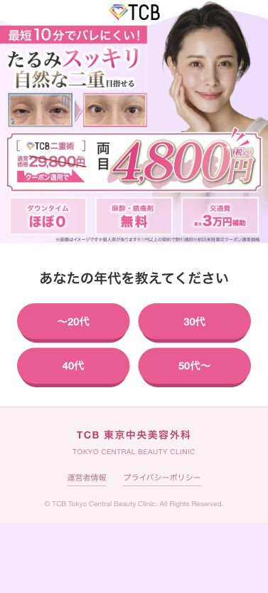
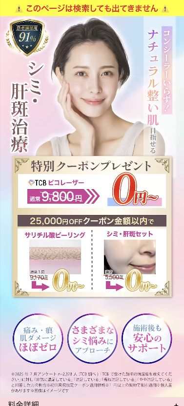
| 比較軸 | 残したもの | 変えたもの |
|---|---|---|
| 訴求 | シミ・肝斑、コンシーラーいらず、ナチュラル整い肌、0円オファー。 | 大きく変えない。訴求ではなく導線で差分を作る。 |
| デザイン | ピコ女性ステップアンケで取れていた虹色/水色系の清潔感。 | 二重女性のピンク寄りデザインから、ピコ商材に合う色へ変更。 |
| 構造 | 悩み共感、商材説明、信頼、FAQ、CTAの教育順。 | ステップアンケではなく、カードを押して裏面が出るフリップアンケに変更。 |
| 狙い | 既存勝ち要素の再利用。 | 既視感のある読者にも「別の見え方」と認識させる。 |
青木さんの発話との照合
| 発話内容 | 実LP/参考元での確認 | 扱い |
|---|---|---|
| フリップアンケート型は駿太さんの二重女性を参考にした。 | 参考元LPも年代質問から始まるカード選択式のフリップアンケ構造だった。 | 照合済み |
| デザインは自社ピコ女性ステップアンケを踏襲した。 | 参考元ピコ女性ステップアンケにも、水色/虹色系、ピコレーザー0円、シミ・肝斑訴求、料金詳細が確認できた。 | 照合済み |
| 今回の主な変更点は訴求ではなく、ステップアンケからフリップアンケへの見せ方変更。 | 対象LPはシミ・肝斑/コンシーラーいらず/0円オファーを残しつつ、悩み・シーン・不安・理想をカード反転で進める構造。 | 照合済み |
| 過去に見た読者にも別物として見せたい。 | 同じピコ女性トーンを残しながら、カード選択・進捗バー・プレゼント演出で体験が変わっている。 | 制作者の仮説 |
2. 中の構造の大枠
LP上の事実FVの下に年代質問があり、その後3枚カードのフリップアンケートが続く。カードを押すと裏面の理想像/解決期待が表示され、次へ進む構造。
制作者の仮説構造は「FVで期待 → 年代で自分ごと化 → 悩みで問題認識 → 生活シーンで感情増幅 → 不安で懸念先回り → 理想像で気持ちを上げる → クーポンで即時CTA → 教育で警戒層を拾う」。
制作者の仮説CVは無料カウンセリング枠確認であり、購入よりは軽いが「クリニックへ行く」行動は重い。そのため、即決層向けの早いCTAだけでなく、怖さ・費用・追加料金・施術流れを下部で処理する必要がある。
3. パートごとの詳細解説
FV: 期待と0円オファーを一気に見せる
LP上の事実「コンシーラーいらず」「ナチュラル整い肌」、Before/After、0円オファー、3つの不安払拭要素を提示。
制作者の仮説シミ/肝斑訴求の広告から来た読者に、ビフォーアフターで「自分もこうなれるかも」と瞬時に思わせる。モデル素材とBefore/Afterは過去に取れていたステップアンケ素材を踏襲。
制作者の仮説上部の水色系の肌期待と、下部の濃い色/金色座布団のオファーで情報の種類を分け、オファーに視線を落とす。
青木さんの詳細言語化
- 読者は広告で「シミか肝斑を取らせてくれる女性が足りていません」「シミか肝斑かわからない方へ」「もやっとした肝斑が邪魔なあなたへ」のような訴求を見て、悩みへの共感と改善期待を持って入ってくる。
- FVでは、その状態の読者に「コンシーラーで隠す」のではなく、自然な素肌・ナチュラルに整った肌を目指せるかもしれない、という期待を作る。
- モデル素材は過去にピコ女性ステップアンケで取れていたものをそのまま使用。素材選定の根拠は新規の好みではなく、既存実績の踏襲。
- Before/Afterは、シミ・肝斑に悩む読者が改善後の理想像を瞬時にイメージできるように置いている。「この状態でもここまできれいになれるかも」と一目で伝える役割。
- オファー部分は、FV上部と明確に色・背景を変えている。普段のチケットを浮かせる見せ方ではなく、背景ごと切り替えて「ここから別情報だ」と認識させる。
- 金色の座布団で「特別クーポンプレゼント」を挟み、その下に0円オファーを置くことで、視線をオファーに落とす。
- 「痛み・痕/肌ダメージほぼゼロ」「さまざまなシミ悩みにアプローチ」「施術後も安心サポート」は、FV段階での軽い不安払拭として入れている。
- コピーとデザインは過去に取れていたステップアンケを踏襲し、フリップアンケ化で見せ方だけを変える。過去に似た訴求を見た読者にも「別のもの」と感じさせる狙い。
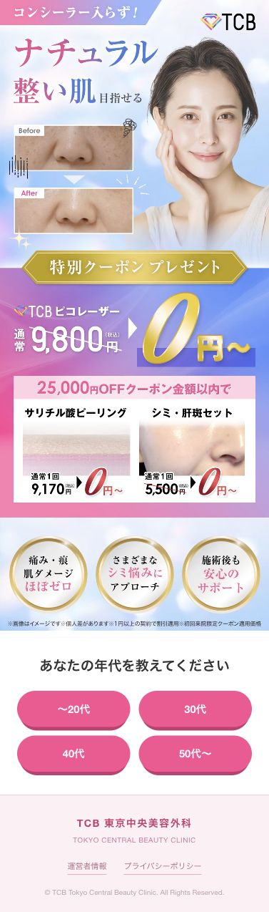
年代質問: 答えやすさで参加姿勢を作る
LP上の事実「あなたの年代を教えてください」とし、〜20代/30代/40代/50代〜を提示。
制作者の仮説最初から重い悩み質問にせず、年代という即答できる質問で能動的な1クリックを作る。35〜60歳前後を広く狙うため、年代選択で「自分も対象」と感じさせる。
青木さんの詳細言語化
- FV直後に質問を置く目的は、まず読者に能動的なアクションを取ってもらうこと。押すことで「記事を読む」から「参加する」状態に切り替える。
- 最初から悩みや不安など重い質問を置くと、考える負荷が発生し、面倒くささや離脱につながる。年代は答えやすいため入口に向いている。
- 選択肢の中に自分の年代があることで、「これは自分向けの記事かもしれない」と直感的に感じさせる。明示的に思わなくても、頭の中で自分ごと化が起きる。
- 30代/40代は「50代も対象なら自分もいけるかも」と感じやすく、50代以降は「自分の年代でも可能性があるかも」と感じやすい。
- FVで生まれた「シミ・肝斑が改善するかも」という期待を、年代選択によって自分の問題へ寄せる役割。
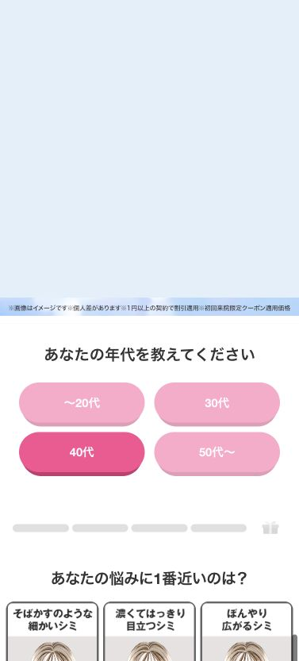
悩みカード: Problemを認識させる
LP上の事実そばかすのような細かいシミ、濃くてはっきり目立つシミ、ぼんやり広がるシミを提示。選択後は、ナチュラル肌/クリア肌/透明肌の理想像に反転。
制作者の仮説PASのProblem。自分の悩みを選ばせた直後に理想像へ反転させ、「それが良くなるかも」という下げ上げを作る。
青木さんの詳細言語化
- ここはPASのP、Problemを認識させるパート。自分にどんな問題があるかを認識しないと、その後の解決策が入ってこない。
- 表面カードは「そばかすのような細かいシミ」「濃くてはっきり目立つシミ」「ぼんやり広がるシミ」で、読者の悩みを取りこぼさないようにしている。
- 悩みを選んだ瞬間、裏面で理想像が出る。問題を認識した1秒後に「これが良くなるかもしれない」という期待を作る。
- 細かいシミは「目立たないナチュラル肌へ」、目立つシミは「ワントーン明るいクリア肌へ」、広がるシミは「つるんと均一な透明肌へ」と反転する。
- 言いたい本質は「その悩みも治るかもしれない」だが、直接断定せず、イラストと理想肌の文言で期待を作っている。
- カード選択後、進捗バーの1本目がグレーからピンクに変わる。これにより「進んでいる」「あと4問くらいで終わるかも」「ゴールに近づいている」と直感的に感じさせる。
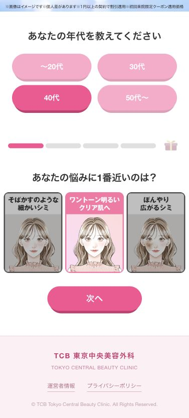
生活シーン質問: Agitationを不快に見せない
LP上の事実「シミを取りたいと思うのはどんなとき？」として、すっぴん、メイク、鏡・写真の場面を提示。上部には来院/受付シーンがある。
制作者の仮説悩みを生活上の嫌なシーンに落とし、旧PASのAgitationを行う。ただし煽り文句にせず、読者が経験していそうな場面を選ばせることで不快感を抑える。
制作者の仮説女性向け商材では、機能説明より「自分が来院する/変わる」イメージの疑似体験が行動意欲につながるため、実写風の来院シーンを見せる。
青木さんの詳細言語化
- 上部の来院/受付シーン動画は、女性読者に「自分が店舗に行く場面」を疑似体験させるために置いている。
- 女性向け商材では、機能や条件だけでなく、実際の店舗シーン・自分が受けるシーンを想像できることが、欲しい/気になる気持ちにつながる。
- 「アンケート回答でクーポンもらえる」は、アンケートを進めるメリット提示。進むことで良いことがある、という期待を維持する。
- 進捗バー2本目がピンクになることで、ゴールに近づいている達成感を直感的に作る。
- この質問は、前問で悩みを選び、その裏面で理想像を見せた後、もう一度生活シーンに落として感情を下げる役割。下げ上げ、下げ上げの感情のジェットコースターを作っている。
- 「どんなとき？」は一見煽りではないが、本質は旧PASのA、Agitation。問題を認識した読者に、実際に困る場面を想像させ、直さないと嫌だなという感情を深める。
- 表面は「すっぴんをためらうとき」「メイクで隠しきれないとき」「鏡・写真で老けて見えたとき」。読者が過去に経験していそうな場面を置いている。
- 裏面は「すっぴんでも余裕で外出」「もっとメイクを楽しめるかも」「若々しい印象になれるかも」。悩みの逆側にある生活ベネフィットを提示。
- イラストも文言に合わせている。外出カードはバッグを持ち上を向いて外出を楽しむ、メイクカードは鏡を見てうれしそう、若々しさカードはシミが消え笑顔になっている。
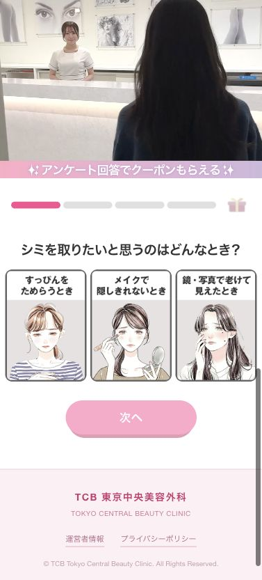
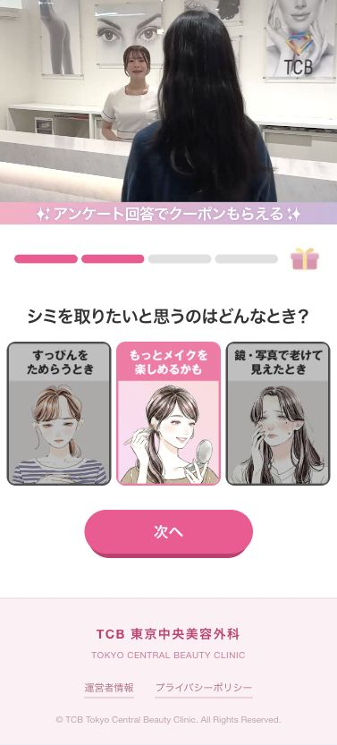
不安質問: 共感しながらSolutionを先出しする
LP上の事実「自分のシミに効果があるのか心配」「痛み・痕が心配」「費用が高そう」を提示。裏面は幅広い症状、痛み・痕ほぼゼロ、クーポン適用0円。
制作者の仮説ここは共感とSolutionの中間。TCBの強みを一方的に語るのではなく、読者の懸念を押したら解決期待が出るYou Messageにしている。
制作者の仮説確信させ切るのではなく、「本当にできるのかな、でもワンチャンあるかも」という半信半疑を作り、続きを読ませる。
青木さんの詳細言語化
- 上部のカウンセリング/施術シーンは、女性が実際に店舗へ行き、カウンセリングを受け、施術を受ける流れを想像させるために置いている。
- 「自分が受けたらどうなるかな」と疑似体験させることで、気になる/受けたい気持ちを増幅させる。
- 3本目の進捗バーがピンクになることで、さらにゴールへ近づいている感覚を作る。
- 「シミ取り治療で不安なことは？」は、共感にも見えるが、役割としてはSolutionに近い。不安を押すと、すぐに解決策が出る。
- ただし、ここでは「TCBの技術がすごい」と大きく言い切らない。読者の不安に寄り添い、ユーザー目線のメッセージにしている。
- 「自分のシミに効果があるのか心配」は効果不安。「幅広い症状にアプローチ」で、自分も対象かもと思わせる。
- 「痛み・痕が心配」は施術不安。「トップクラスの技術で痛み・痕ほぼゼロ」で、怖さを下げる。
- 「費用が高そう」は価格不安。「クーポン適用で0円」で、オファーへの期待を強める。
- ここで目指す心理は確信ではなく半信半疑。「本当に0円でできるのかな」「嘘っぽいけどワンチャンあるかも」くらいが続きを読みたくなる。
- 当たり前すぎる情報は読まれず、嘘すぎる情報は信じられない。少し疑うくらいの状態が興味を引く、という前提で設計している。
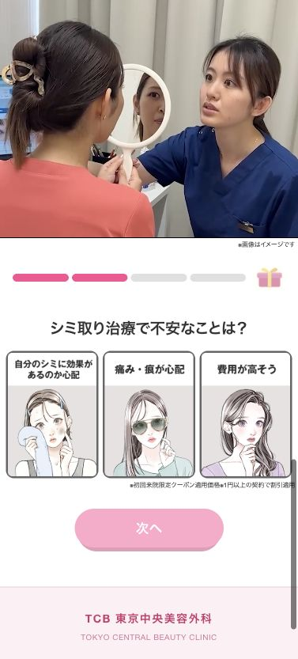
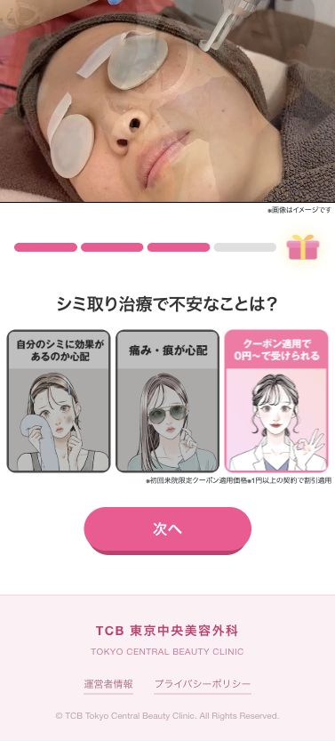
理想質問: CTA前にBenefitで気持ちを上げる
LP上の事実「シミが取れたらどうなりたい？」として、周りの目、朝のメイク、印象への自信を提示。カード選択後に回答完了ボタンが緑で有効化される。
制作者の仮説最後はネガからポジの反転ではなく、最初から理想像を選ばせる。女医風イラストと肯定的な文言で、「叶えられそう」という期待を作る。
制作者の仮説プレゼントボックスと進捗バーで、ロールプレイングゲームのクリアに近い達成感を作り、回答完了へ進ませる。
青木さんの詳細言語化
- 上部のきれいな肌の女性動画は、こんなツルツルな肌になれるかもしれないというベネフィット素材。
- プレゼントボックスが光って開く演出は、ゴールに近づいた/クリアした感覚を作る。ロールプレイングゲームをクリアした時に近い達成感。
- 質問順としては、Solutionの後のBenefit。「シミが取れたらどうなりたい？」で最後に期待を高め、CTAへつなげる。
- 表面の「周りの目を気にせず過ごしたい」「朝のメイクを楽にしたい」「印象に自信を持ちたい」は、ユーザーが望んでいるであろう理想を提示している。
- このパートは、これまでのネガティブ→ポジティブの反転とは少し違う。表面からすでに理想を描かせ、裏面でそれが現実につながりそうだと感じさせる。
- 裏面では女性医師風のイラストが「大丈夫ですよ」「それ叶えられますよ」と間接的に後押ししている。
- 「プルツヤ肌で私らしく過ごせる毎日へ」「メイクをタスクから楽しむへ」「透明肌で印象アップ」は、可能ですよと断定しないが、そう思える余白を作る。
- カード選択後に「回答を完了する」ボタンが濃い緑へ変わる。これにより、押していい/押したい状態を明確にする。
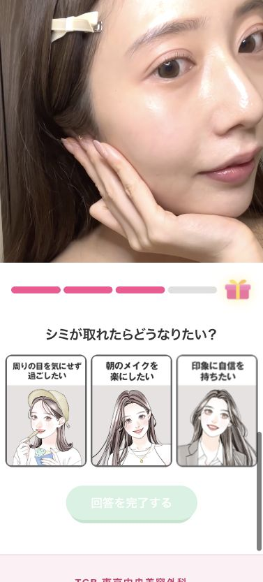
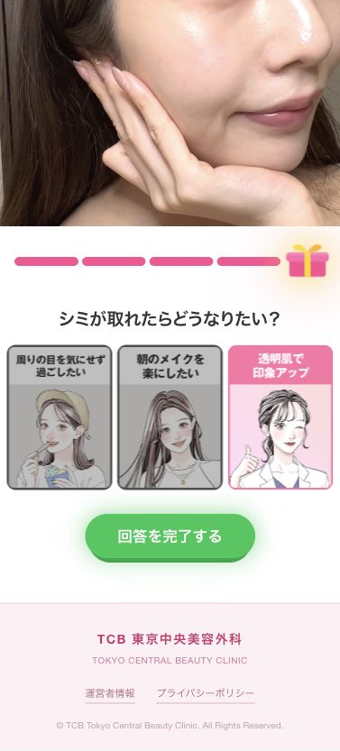
初回CTA: 即決層を刈り取る
LP上の事実回答完了後、25,000円OFFクーポン、0円オファー、料金詳細、30秒予約手順、無料カウンセリング枠確認CTAを提示。
制作者の仮説ここまで回答した報酬としてクーポンを出し、「もらえた」「ラッキー」というポジティブ感情を作る。細かい条件よりも、0円で悩みが解決するなら行きたい層をここで拾う。
制作者の仮説一方で、0円の理由、追加条件、押し売り不安は残るため、即決しない読者向けに下部教育を用意する。
青木さんの詳細言語化
- 「アンケートの回答ありがとうございました」「25,000円OFFクーポンをお受け取りください」は、今まで回答してきた努力が報酬につながったと感じさせるパート。
- プレゼントボックスからクーポンが出る演出で、「もらえた」「よかった」「ラッキー」という軽いポジティブ感情を作る。
- その下にFVとほぼ同じオファー画像を置き、ナチュラル整い肌を目指せること、ピコレーザーが0円で受けられることを再認識させる。
- ここまでの回答で、読者は「いい未来が手に入るかもしれない」と思っている。その状態で0円オファーを提示すると、「それなら受けたい」となりやすい。
- この段階で細かい条件を気にせず、安く悩みが解決するならやりたいと思う素直な読者は、すぐCTAへ進む。
- 予約手順は「ページ下のボタンをタップ」「希望店舗・来院日時を選択」「名前と電話番号を入力」の3ステップ。簡単30秒と見せ、手続きのハードルを下げる。
- 揺れるCTAボタンで、どこを押せばよいかを直感的に示す。
- このCTAを早く置く理由は、今欲しいと思っている読者を逃さないため。長く読ませすぎて「やっぱりいいや」となる前に刈り取る。
- 一方で、警戒心のある読者には「0円ってなぜ？」「条件があるのでは？」「押し売りされない？」「これだけでは済まないのでは？」という不安が残る。その人たち向けに下部教育を置く。
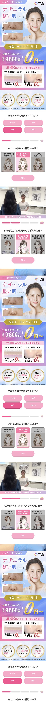
教育1: 共感からピコレーザーの理解へ
LP上の事実「毎日ふとした瞬間にどんより...」の共感から、「TCBのシミ・肝斑治療 ピコレーザー」へ接続。
制作者の仮説「こんな悩みありませんか？」と売り手感を出さず、会話に近い情緒で共感させる。その後、ピコレーザーを「シミを根本からケアするレーザー美肌治療」と説明し、何をされるかわからない不安を下げる。
青木さんの詳細言語化
- ここからは、先ほどのCTAで進まなかった読者、つまり条件や懸念がまだ残っている読者に向けて教育するパート。
- まず「毎日ふとした瞬間にどんより...」で現状を再提示する。「すっぴん無理だよな」「老けた気がする」「肌がきれいな人と比べちゃう」という気持ちへの共感。
- あえて「こんな悩みありませんか？」という疑問形にしない。疑問形にすると売り手対買い手の構図が出て、買わされる感が生まれやすい。
- 「どんより」という言い回しで、会話のように「ああ、わかる」と自然に読み進めてもらう。
- その後に「そんなあなたにおすすめなのが、TCBのシミ・肝斑治療 ピコレーザー」と解決策を提示。
- ピコレーザーを知らない読者も多い前提で、「そもそもピコレーザーとは？」を置く。ここで初めて、レーザーで治療する方法だとしっかり理解させる。
- このパートで解決したいのは、「どうやって解決するの？」「危ないのでは？」「痛いのでは？」「何をされるかわからない」というメカニズム不安。
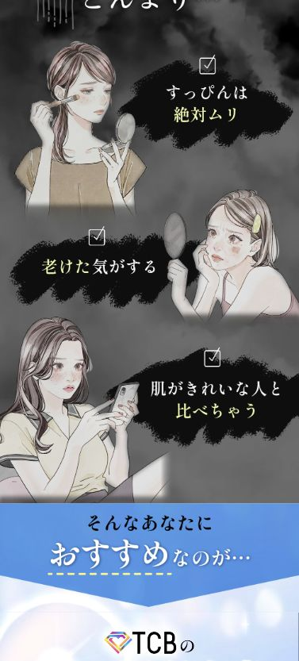
教育2: 効果期待とTCBの信頼
LP上の事実Before/Afterで複数のシミ悩みを見せ、「こんなに綺麗に!?」と表現。その後「TCBが選ばれる理由」として、痛み・痕ほぼゼロ、医師が問診から一貫対応、幅広い症状を相談可能を提示。
制作者の仮説「綺麗になります」と言い切らず、景表法配慮として断定を避けながら期待を作る。商材への期待の後に、提供元であるTCBへの安心感を積む。
制作者の仮説「相談可能」は解決断定ではないが、読者には「対応してもらえるかも」と解釈されやすい余白を残している。
青木さんの詳細言語化
- ピコレーザーの説明後に、「他の方法と何が違うのか」「実際どうなのか」を視覚的に補足する。
- 「様々なシミがこんなに綺麗に!?」は、効果を断定しないための表現。「綺麗になります」ではなく、景表法上のリスクを避けながら期待を作る。
- そばかす、目立つシミ、広がるシミのBefore/Afterを並べ、幅広い悩みに対応できそうだと直感的に見せる。
- 「根本ケアして目指せる自信いっぱいの素顔」で、症状改善だけでなく、働く/楽しむ/笑顔で過ごす生活シーンまで想像させる。
- ここまでで読者は「ピコレーザーで自分のシミが良くなるかも」と思っている。次に残るのは「それを提供するTCBは安心できるのか」という不安。
- 「TCBが選ばれる理由」では、痛み・痕ほぼゼロ、医師が問診から一貫対応、幅広い症状を相談可能を提示する。
- 医師が対応する、病院感がある、ちゃんとしたクリニックである、という印象を出して、よくわからない美容業者への不安を払拭する。
- 「幅広い症状を相談可能」は「治る」とは言っていないが、相談できるなら対応してくれるかも、と読者が自然に期待できる表現。
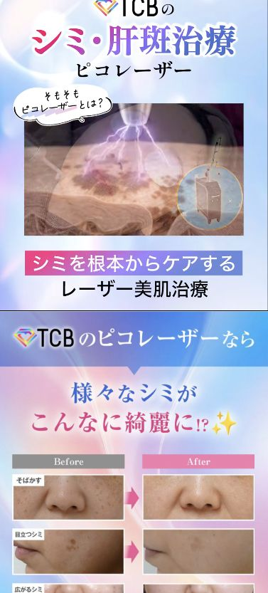
教育3: 社会的証明から再CTAへ
LP上の事実年間来院者数96万人以上、仕上がり満足度91%、リピート希望率96.7%、全国100院以上を提示。
制作者の仮説数字と金色エンブレムで、細かく読まなくても「大手で安心そう」とシステム1的に感じさせる。信頼を積んだ直後に予約手順とCTAを再提示する。
制作者の仮説この段階でCVする人が多いかは、記事構造上CTA別成果で直接検証しづらい。ここでは、社会的証明後に行動する読者も拾うための設計仮説として扱う。
青木さんの詳細言語化
- 商材と提供元の説明をした後でも、「TCBって実際どうなの？」「あまり知らないけど大丈夫？」という不安が残る。
- そこで「だからこそTCBは多くの方に選ばれ、ご評価いただいています」と社会的証明へつなげる。
- 年間来院数96万人、仕上がり満足度91%、リピート希望率96.7%、全国100院以上を並べる。9や100の数字が並ぶことで、人は直感的に「すごそう」「ちゃんとしてそう」と感じやすい。
- これはシステム1的な信頼形成。細かく読ませるより、数字と豪華なエンブレムで安心感を作る。
- 詳しく読んでも、年間96万人、全国100院以上から「大手なんだろうな」「それだけ通っているなら安心かも」と判断できる。
- ここまでで、商材の強さ、TCBの安心感、社会的証明を積んだため、改めてクーポン予約の方法とCTAを提示する。
- この下は、それでもまだ迷う人、決まりきらない人に向けた最後の不安処理としてFAQと施術流れへつなげる。
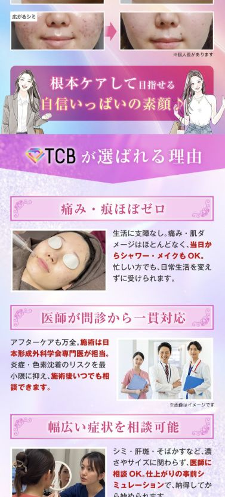
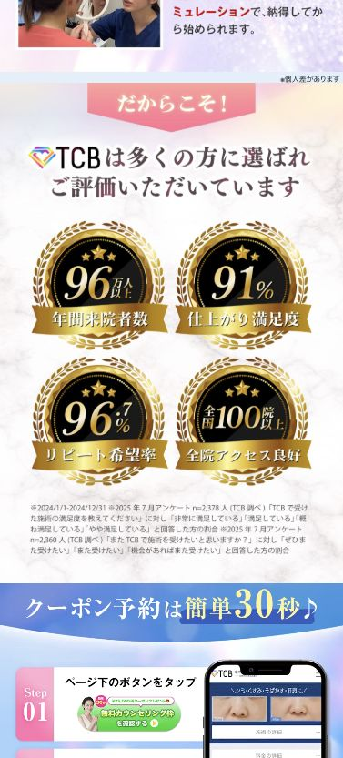
FAQ・施術流れ・最終CTA: 最後の未知感をなくす
LP上の事実FAQは、痕、追加料金、相談だけでもOKかを扱う。施術流れは受付、カウンセリング、施術を実写で提示。最後に理想肌画像、CTA、注意喚起を置く。
制作者の仮説FAQは懸念払拭だけでなく、「同じ不安を持つ人がいる」という社会的証明でもある。赤みについては「出ることもある」と誠実に伝えた方が、絶対ないと言い切るより安心されやすい。
制作者の仮説来院後に何が起きるかわからない怖さを、受付→カウンセリング→施術の疑似体験で下げる。最後の注意喚起は、後回し離脱を防ぐ損失回避。
青木さんの詳細言語化
- FAQは懸念払拭だけでなく、「あなた以外にもこういう質問を持つ人がいる」という社会的証明でもある。自分だけが不安なのではない、という安心感を作る。
- 「痕が目立ったりしませんか？」では、絶対にないと言い切らず、赤みが出ることもあるが24時間以内に治まる軽微なものがほとんどと伝える。少しあるが大丈夫、の方が誠実に見える。
- 「追加料金はありますか？」では、合意のない追加料金は一切ないと伝え、急に売られる/強引に販売される不安を下げる。
- 「相談だけでもOKですか？」では、いきなり施術ではなく無料カウンセリングだけでもよいと伝え、行動ハードルを下げる。
- 当日の施術の流れは、途中のアンケートと同じく疑似体験。初めてクリニックへ行く怖さ、何をされるかわからない不安を下げる。
- 受付では、優しい店員さんが迎えてくれる場面を見せる。カウンセリングでは、鏡を見ながら丁寧に話せるイメージを作る。施術では、ゴーグルや細かいレーザーで「こういう感じなんだ」と理解させる。
- 最後にきれいな肌の女性画像を置き、理想像を再提示して「いいな」と思わせた上でCTAへつなげる。
- 黄色の注意喚起は、後でいいやと離脱する読者を防ぐ損失回避。「このページを閉じると二度と表示されないかも」で、今予約だけしておこうという行動を促す。
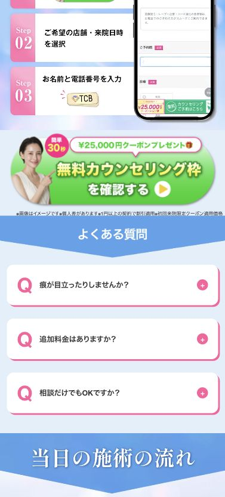
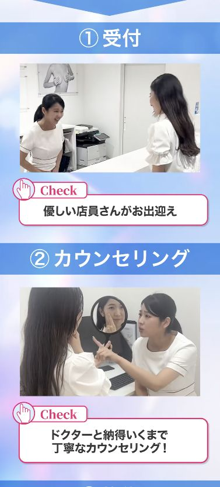
4. 抽象化: 次回制作者が考えるべき10個
- 既存勝ち記事を横展開する時は、訴求・素材・オファーの核と、導線・見せ方の変更点を分ける。
- CVが無料カウンセリングでも、来院を伴うなら「怖さ」「費用」「追加条件」「流れ」の教育を用意する。
- 最初の質問は重くせず、答えやすい内容で能動的参加を作る。
- 悩み質問はProblem、生活シーン質問はAgitation、不安質問はSolution前の懸念処理、理想質問はBenefitとして役割を分ける。
- カード反転は、表面で悩み/不安を出し、裏面で理想/解決期待を出す下げ上げ設計にする。
- 女性向け美容商材では、実際の来院・カウンセリング・施術シーンを入れて、購買後/来院後の疑似体験を作る。
- 即決層にはアンケート完了直後にCTAを出し、警戒層にはその後で教育を積む。
- 数字・エンブレム・院数・満足度は、細かく読ませるより直感的信頼を作る目的で使う。
- 景表法/薬機法に関わる表現は、効果断定ではなく「目指せる」「こんなに綺麗に!?」など期待表現に寄せる。
- 最終CTA前には、FAQと施術流れで最後の未知感を消し、損失回避で後回しを防ぐ。
横展開時の切り分け
| 分類 | 今回から抽出するルール |
|---|---|
| 絶対に残す核 | 悩み自覚→生活シーン→不安→理想像→報酬CTA→教育の順番。表面/裏面で感情を上下させる構造。 |
| 商材ごとに変える訴求 | 悩みカード、生活シーン、主要懸念、効果期待、FAQ。商材リサーチで出た実際の不安を入れる。 |
| ターゲットごとに変えるデザイン | 二重女性の可愛いピンクではなく、ピコ女性では水色/虹色/清潔感/医療感に寄せた。年齢と悩みの重さに合わせる。 |
| テストしてよい表現 | カード裏面の理想文言、CTA前のクーポン演出、社会的証明の順番、FAQの粒度。ただしオファー条件と注釈は正確に残す。 |
5. チェックリスト化
- □広告流入時点の読者心理を、悩み・期待・疑いに分けて書いたか。
- □既存勝ち記事から残す核と、今回変える表層を分けたか。
- □最初の質問は読者が迷わず押せる軽さになっているか。
- □悩みカードは、ターゲットの主要悩みを取りこぼさない選択肢になっているか。
- □カード裏面は、表面の悩みに対する理想像/解決期待になっているか。
- □生活シーン質問で、悩みを日常の不便・感情に落とし込めているか。
- □不安質問で、効果・痛み・費用・追加条件などの主要懸念を先回りできているか。
- □即決層向けCTAと、警戒層向け教育パートを分けているか。
- □社会的証明は、読まなくても直感的に安心できる見せ方になっているか。
- □FAQと施術流れで、来院前の未知感を十分に下げているか。
- □0円や割引の注釈、適用条件、初回来院限定などを正確に残しているか。
- □効果断定になりそうな表現は、景表法/薬機法の観点で確認したか。
扱いの注意・次回確認したいこと
| 項目 | 扱い | 理由 |
|---|---|---|
| Beyondステップ別指標 | 今回は追わない。 | 構造上、通常LPのように各パートの離脱・到達としてきれいに解釈しづらいため。 |
| CTA別成果 | 今回は追わない。 | 初回CTA/教育後CTA/最終CTAの寄与を厳密に切るより、AXADの媒体別成果で記事全体の勝ちを判断する。 |
| 参考元の成果 | 余裕があれば確認。 | 駿太さん二重女性フリップアンケ、自社ピコ女性ステップアンケの強さを数値でも裏取りできると、横展開根拠がさらに強くなる。 |